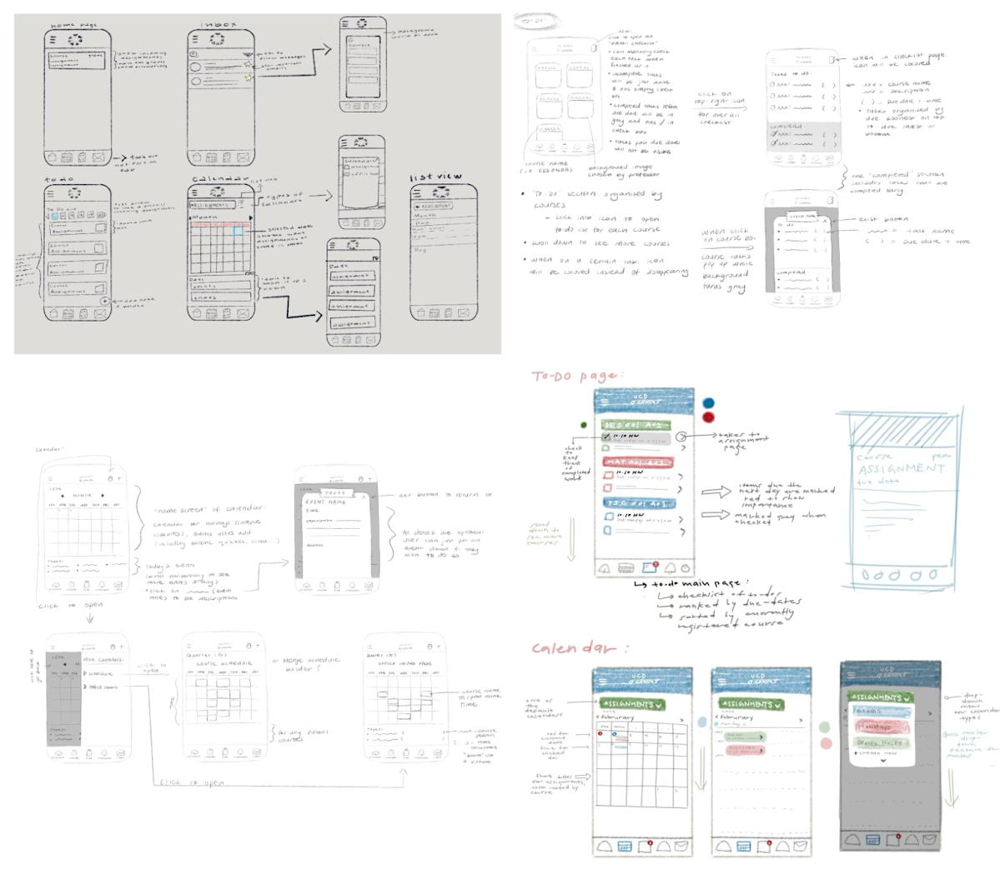
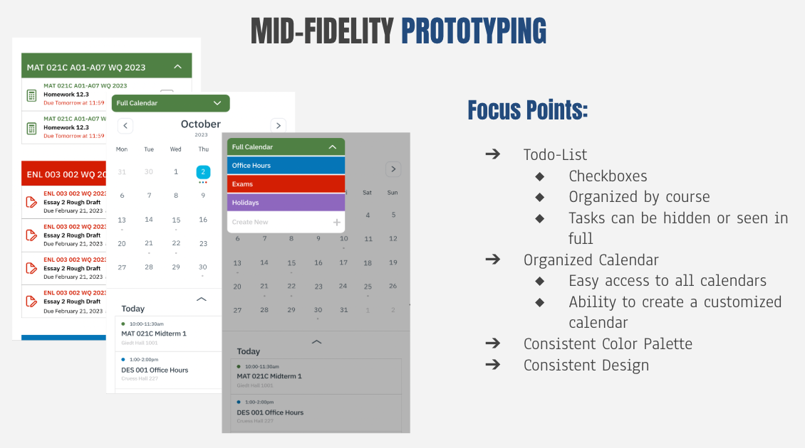

Canvas - A UX Case Study
Timeline
- Feb-Mar 2023
Software
- Figma
My Role
- Designer
Award
- Best Visual Design
Introduction
Canvas is a core academic platform used daily by college students to manage coursework, deadlines, and schedules. However, despite its importance, many students find certain features—particularly the To-Do list and Calendar—difficult to use and poorly organized.
With two other designers in a three-week UI/UX design sprint for Design Interactive at UC Davis, I explored how the Canvas mobile app could better support students’ task and time management needs through clearer organization and more intuitive interactions.
The Challenge: How might we improve the organization and usability of Canvas’s To-Do list and Calendar to better support students’ academic planning?
Research
Research Methods
To better understand how students currently use Canvas, we conducted a user survey focused on students’ experiences, feature usage, and pain points. Survey questions asked participants which Canvas features they use most frequently, which features they avoid, and what improvements would make Canvas more convenient and practical for everyday use.
- We also conducted a competitive analysis of Notion and Google Calendar to identify best practices in task and time management. Our analysis focused on:
- Task organization: How tasks are grouped, categorized, and prioritized
- Calendar usability: Options for multiple calendar views, event categorization, and customization
- Interaction clarity: Feedback mechanisms, navigation cues, and discoverability of key functions
Key Research Data and Findings
Survey results revealed several consistent patterns. While most participants relied heavily on Canvas’s Calendar feature, far fewer regularly used the To-Do list. Across both features, a dominant concern was a lack of organization, making it difficult for students to quickly understand priorities, deadlines, and task completion status.
Because the To-Do list is intended to support task completion and the Calendar is one of the most frequently used tools on Canvas, these insights highlighted clear opportunities for redesign. Improving the organization and clarity of these two features became the primary focus of our project.
- Competitive Analysis Insights:
- Notion: Offers flexible task organization, including collapsible lists, sub-tasks, and category-based grouping. Users can track completion status visually, prioritize tasks, and easily switch between task views and calendar views.
- Google Calendar: Provides multiple calendar views, color-coded events, and seamless integration of personal, academic, and extracurricular schedules. Users can toggle categories on/off, giving better control over how events are displayed.
This comparison highlighted opportunities for Canvas: users expect collapsible, organized task lists, clear visual cues for task completion, and customizable calendar views, which are features that Canvas currently lacks.
Ideation
Based on survey results and competitive analysis, we identified key pain points including disorganized tasks, lack of visual feedback, and limited calendar flexibility, and generated solutions for each.
Sketches
- Low-fidelity sketches explored these solutions, including:
- Task categorization by course and due date inspired by Notion’s collapsible lists and sub-tasks
- Checklist functionality and visual completion states reflecting best practices in task management apps
- Multi-calendar views supporting academic, personal, and extracurricular events, modeled after Google Calendar’s customizable views
Mid-fi & Testing
Our design goals focused on improving organization, clarity, and visual feedback while maintaining familiarity with Canvas’s existing structure. Guided by survey insights and competitive analysis of Notion and Google Calendar, we developed solutions for the To-Do list and Calendar that directly addressed user pain points.
- To-Do List Redesign:
- Default category calendars (exams, office hours, holidays) alongside customizable calendars for extracurricular events, reflecting Google Calendar’s flexibility
- “Full calendar” view for a comprehensive schedule overview
- Calendar Redesign:
- Multiple calendar views (daily, weekly, monthly) to accommodate different planning styles
- Color-coded events based on categories (academic, personal, extracurricular) for quick visual differentiation
- Toggle options to show/hide specific event categories, enhancing customization and reducing clutter
- Interaction & Visual Design Enhancements:
- Tab icons now remain visible and highlight when selected, providing clearer navigation feedback
- Arrow icons added to To-Do tasks for easy access to assignment details
- Consistent design system: sharper corners for interface elements, rounded edges for dropdowns, and unified styling across screens
Key Findings & Iterations
Usability testing surfaced several interaction clarity issues that guided targeted refinements.
One common issue was confusion around a line icon intended to be dragged upward to reveal all events for a given day. Many users did not understand its function, so we replaced it with a clearer arrow button, better signaling its purpose.
Another issue emerged in the To-Do list: users were unsure how to access full assignment details. While clicking the assignment title originally led to the assignment page, this interaction was not obvious. In response, we added a separate arrow icon next to each task to clearly indicate navigation to detailed assignment information.
Final Designs
- The final design focused on improving organization while keeping interactions simple and familiar:
- A structured, course-based To-Do list with checklist functionality and visual completion states
- A multi-calendar system that supports both academic and extracurricular scheduling
- Clearer navigation cues and interaction feedback
- Consistent visual language across all redesigned screens
Next Step
Given the limited three-week timeframe, our redesign focused primarily on the To-Do list and Calendar. Future work could expand these improvements to Canvas’s web interface, ensuring consistency and usability across platforms. Additionally, we would explore redesigning other features, such as notifications, assignment submission pages, and dashboard elements, to further enhance task management and overall user experience. Long-term testing of the redesigned features could also provide insights into how students customize calendars and interact with tasks over time, informing further refinements.